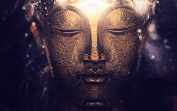

How to meditate?
With the hectic pace and demands of modern life, many people feel stressed and over-worked. It often feels like there is just not enough time in the day to get everything done. Our stress and tiredness make us unhappy, impatient and frustrated. It can even affect our health. We are often so busy we feel there is no time to stop and meditate! But meditation actually gives you more time by making your mind calmer and more focused. A simple ten or fifteen minute breathing meditation as explained below can help you to overcome your stress and find some inner peace and balance... click to see more
Getting closer to the Buddha
Buddhist practitioners light and burn incense sticks. They raise the burning sticks above the head and bow to the statues of Buddha. Then they place their sticks vertically on burners from which smoke wafts.
Worshipers do so in a hope to talk to the Buddha who will appear in the smoke. This is the scene you will see in most of the functioning Buddhist temples in China...click to see more
Astrology and Astronomy
From the very beginning of time man has been fascinated by the stars and he has always tried to find some links between them and his own destiny. His observation of the stars and their movements gave rise to two very important areas of study, namely, Astronomy and Astrology. Astronomy can be considered a pure science which is concerned with the measurements of distances, the evolution and destruction of stars, their movements, and so on...click to see more